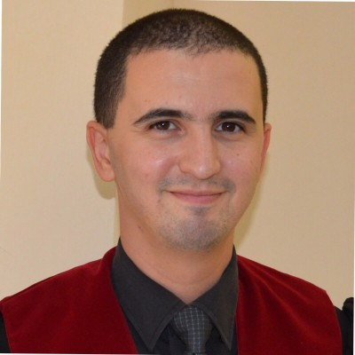
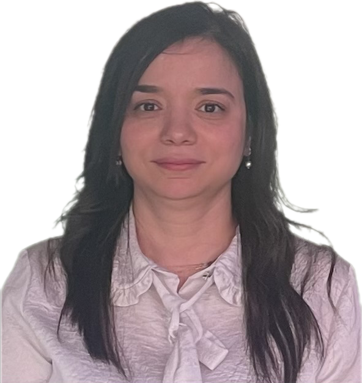

Committees
Seminar Committees
The success of the 1st Hybrid National Seminar on Bioactive Molecules (NSBM 2026) relies on the dedication and expertise of its organizing and scientific committees. Their commitment ensures the scientific quality, organization, and success of the seminar.
Honorary Chairman
Prof. KHELIFI Douadi
Honorary Chairman
National Higher School of Biotechnology (ENSB), Constantine, Algeria
Seminar Chairman

Prof. MARIR Rafik
Seminar Chairman
National Higher School of Biotechnology (ENSB), Constantine, Algeria
Organizing Committee
Committee Chair

Dr. BENMATI Mahbouba
Committee Chair
National Higher School of Biotechnology (ENSB), Constantine, Algeria
Members
- Dr. RIRA Moufida
- Dr. RAHIM Noureddine
- Dr. ASSADI Imène
- Dr. ALLOUI Tarek
- Dr. BENOUCHENE Djamila
- Dr. TRAD KHODJA Esma Anissa
- Dr. DJEHAL Amel
- Dr. BIBAK Sirine
- Dr. BOUMAZA Khedidja
- Dr. BENSAAD Mohamed Sabri
- Dr. KEMMOUCHE Amina
- Dr. MADDI Taklit
- Dr. DOUIBI Maroua
- Dr. GASMI Meriem
- Dr. LAOURARI Ines
- Dr. SMATI Maria
- Dr. KRID Adel
- Dr. BENDJRADA Mohamed Essalih
- Dr. KECHID Radia
- Dr. CHELGHOUM Ahlem
- Dr. KAHLOUCHE Fatima Zohra
- Dr. ZERMANE Maroua
- Dr. CHEBAHI Asma
- Dr. TELAIDJIA Basma
- Dr. BERBOUCHA Ghozlane
- Dr. GHARIANI Dounia
- Dr. BOUHADJAR Maroua
- Dr. ABBAS Nada
- Dr. BOUKERZAZA Rania
- Dr. BOUHIDEL Rayene
- Dr. MOHAMED BOUCHAALA Antar
- Dr. GUERAICHE Sara
- Dr. DAKKICHE Skander
Scientific Committee
Chair
Prof. BELLIL Ines
Scientific Committee Chair
National Higher School of Biotechnology (ENSB), Constantine, Algeria
Members
| Committee Member | Institution |
|---|---|
| Prof. HAMIDECHI Abdelhafid | University of Khenchela |
| Prof. BENSLAMA Ouidad | University of Oum El Bouaghi |
| Prof. BOUCHEDJA Naila Doria | University Constantine 1 |
| Prof. GRAMA Borhane | University of Oum El Bouaghi |
| Prof. BOULEBD Houssam | University Constantine 1 |
| Prof. REZGOUN Larbi | University Constantine 1 |
| Prof. OUTILI Nawel | University Constantine 3 |
| Prof. HARFI Boualem | CRBt |
| Prof. NAIMI Dalila | ENSB |
| Prof. MARIR Rafik | ENSB |
| Prof. BANI Mostafa | ENSB |
| Dr. DAFFRI Amel | University Constantine 1 |
| Dr. MERZOUG Mohamed | ESSBO |
| Dr. BENSOUICI Chawki | CRBt |
| Dr. BENMATI Mahbouba | ENSB |
| Dr. RIRA Moufida | ENSB |
| Dr. RAHIM Noureddine | ENSB |
| Dr. ASSADI Imène | ENSB |
| Dr. ALLOUI Tarek | ENSB |
| Dr. BERKANI Mohamed | ENSB |
| Dr. MEROUANE Fateh | ENSB |
| Dr. DERABLI Chamseddine | ENSB |
| Dr. ZERROUKI Soheib | ENSB |
| Dr. KECHKAR Adel | ENSB |
| Dr. CHEHLATT Sihem | ENSB |